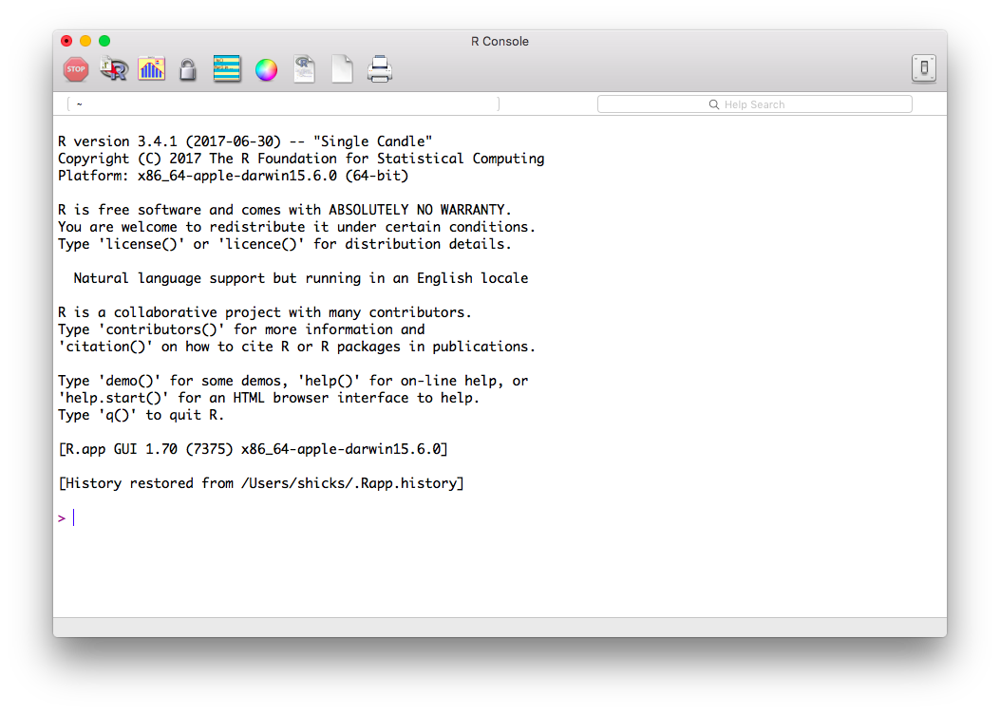
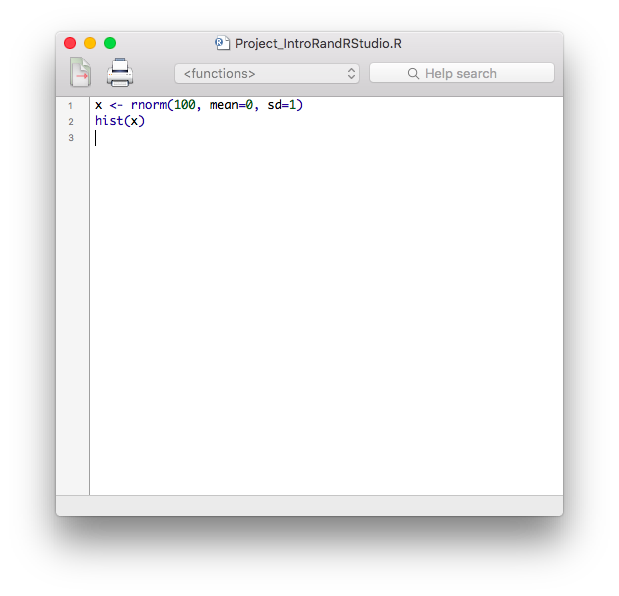
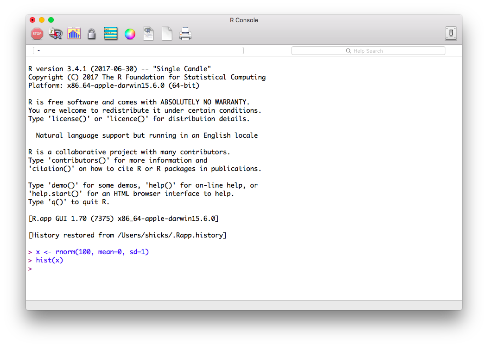
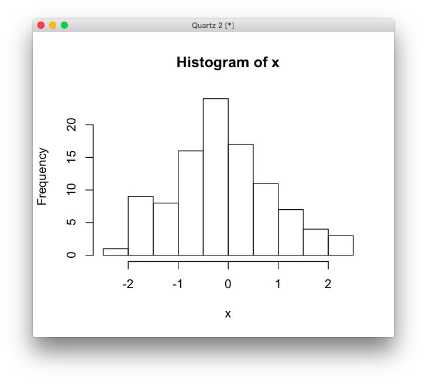
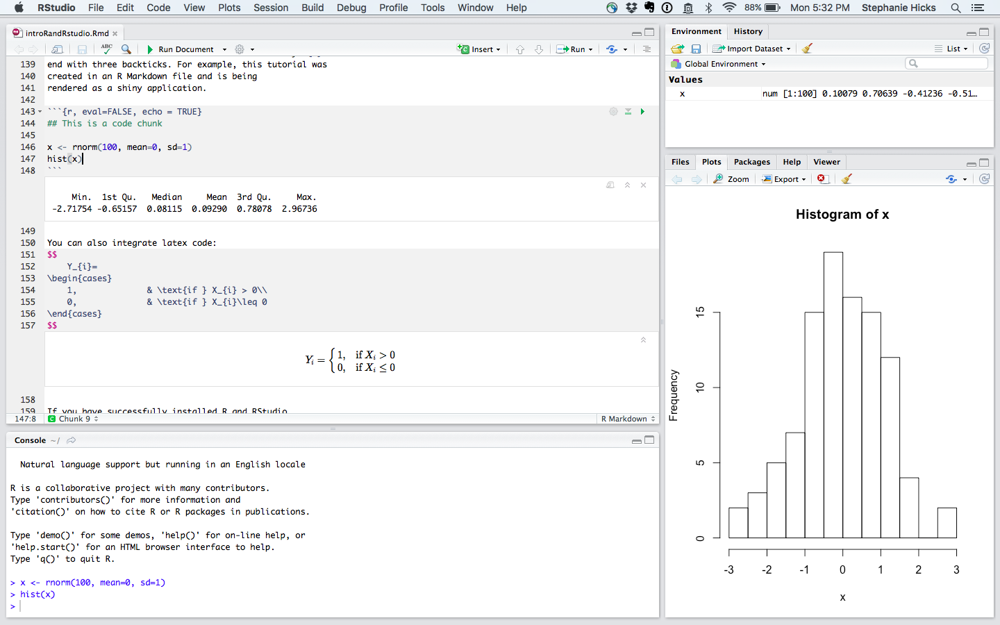
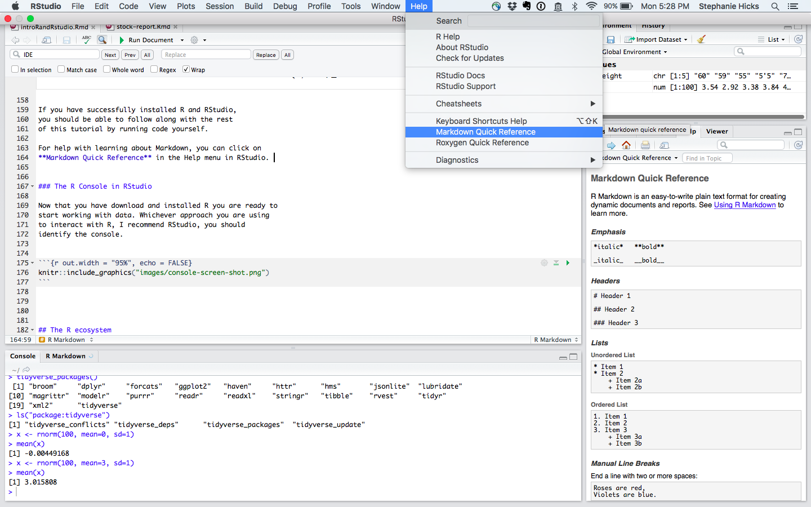

The R programming language

Although R is technically a programming language, it was developed specifically for analyzing data. Hence, we teach R in the context of analyzing data rather than as one would teach a programming language. Along the way, we will be learning some data analysis concepts.
For anyone with limited programming experience, here are some useful R programming courses to help you getting started with R:
- DataCamp’s R course
- Coursera’s R Programming course
- edX’s Introduction to R Programming
Installing R
The first step is to install R. You can download and install R from the Comprehensive R Archive Network (CRAN). It is relatively straightforward, but if you need further help you can try the following resources:
Using R
When you open R, an R console will open:

The console is where you can write and execute the code.
Let’s try writing some R code. When you type a line of code into the console and hit enter the command gets executed. For example, try typing 2 plus 2 and hit enter:
2 + 2Instead of writing the code directly into the console, typically you write the code in an R script file that ends in .R.
Here we are sampling 100 observations from the normal distribution with mean 0 and standard deviation of 1, assigning it to the letter x, and then asking R to create a histogram.

Once you hit enter on the line of code, the code is executed in the console.

After you execute the code written in the R script file, a third window will open to view the plot.

Exercise
Let’s interactively sample 100 observations from a normal distribution with mean of 3 and standard deviation of 1 and assign it to x. Calculate the sample mean of x.
x <- rnorm(100, mean=3, sd=1)
mean(x)Note: to make assignments in R, we use <-. We can also use the equal sign = although here we try to stick to <- to make it very clear it is an assignment and not logical statement.
RStudio

RStudio builds upon R to provide an integrated development environment (IDE). It includes a console, syntax-highlighting editor and tools for plotting, history, debugging and workspace management. For this tutorial we will use RStudio.

Installing RStudio
The next step is to install RStudio. Instructions for Linux and Mac OSX are here and for Windows there are special instructions.
R Markdown
You can create different types of files in RStudio: For example, you can use .R files like before, but you can also work with what are called R Markdown files which end in a .Rmd file format.
These are documents that create reproducible reports. It integrates narrative text and code together and creates elegantly formatted output (including HTML, PDF, MS Word, Beamer, shiny applications, and websites).
The code is written inside of what are called code chunks. These are defined with three backticks ``` followed by {r} and end with three backticks. For example, this tutorial was created in an R Markdown file and is being rendered as a shiny application.
## This is a code chunk
x <- rnorm(100, mean=0, sd=1)
hist(x)You can also integrate latex code:
\[
Y_{i}=
\begin{cases}
1, & \text{if } X_{i} > 0\\
0, & \text{if } X_{i}\leq 0
\end{cases}
\]
If you have successfully installed R and RStudio, you should be able to follow along with the rest of this tutorial by running code yourself.
For help with learning about Markdown, you can click on the Markdown Quick Reference in the Help menu in RStudio.

Base R
When you download R from CRAN you get what we call base R. This includes several functions that are considered fundamental for data analysis.
Here is a cheatsheet from RStudio about base R:

In the next few sections, we’ll cover some basics about base R.
Base R also includes several example datasets. These datasets are particularly useful as examples when we are learning to use the available functions. You can see all the available datasets by executing the function data():
data()Because in R functions are objects, we need the two parenthesis to let R know that we want the function to be executed as opposed to showing us the code for the function. Type data and note the difference:
dataExplore a data set in R
To see an example of functions at work, we will use the faithful dataset (Old Faithful Geyser Data). To view any data set that has been loaded in R, you can just type the name of the data set. Be careful if you have a large data set as this will print all rows and all columns in the R console.
faithfulWe see there are two columns titled eruptions and waiting and 272 observations.
Alternatively, if you want to see just the first few rows of the data set, use the head() (or tail()) function, which returns the first few (or last) rows.
head(faithful)If you want to see a summary of the structure (or dimension) of the data set, you can use the str() (or dim()) function.
str(faithful)Here we see that this object is a data.frame. These are one of the most widely used data types in R. They are particularly useful for storing information into table structures
Extracting elements in a data frame
To extract specific elements in a data.frame in R, we can use the [ and ] symbols with a comma inbetween:
## extract element in 5th row and 2nd column
faithful[5,2]
## extract element in 10th row and 1st column
faithful[10,1]Extracting entire columns
There are two ways to extract an entire column from a data.frame.
[ and ] symbols:
faithful[,1]Note, we do not write a number before the comma, which tells R to return all the rows in the first column. This returns a vector.
Alternatively, to extract columns by specifying the name of the column in the data.frame we use the $ character like this:
faithful$eruptionsThis also returns a vector.
To return a list of the column names, we use thecolnames() function:
colnames(faithful)Finally, we access elements from a vector using the [ and ] symbols:
faithful$eruptions[2]Vectors
Vectors in R are a sequence of data elements of the same type. Many of the operations used to analyze data are applied to vectors. In R vectors can be numeric, characters or logical.
The most basic way to create a vector is with the functionc():
x <- c(2, 4, 6)
xTwo other common ways of generating vectors are using : (called the colon operator) or the seq() function:
x <- 1:5
x
x <- seq(1,5, by = 0.5)
xVectors can be repeated using the rep() function:
x <- rep(1:3, each=5)
xThere are some basic vector functions too such as table(), unique(), sort()
x <- rep(20:25, each=5)
str(x)Coercion
Vectors need to be homogenous. But when R is instructed to create a vector of different types, it does not give an error. Instead it tries to coerce values to be the same. Here is an example of coercing a list of numbers (heights in inches) with a character string (height in feet and inches):
height <- c(60, 59, 55, "5'5", 70)
str(height)Note that no warning or error was given. It simply changed everything to a character. This is important to know because sometimes we make a mistake in entering data and receive no error message.
Basic plots in R
To illustrate the function plot() (one of the base functions in R), we can plot the “eruption time” and “waiting time to next eruption” like this:
plot(x = faithful$eruptions, y = faithful$waiting)Getting help in R
A key feature you need to know about R is that you can get help for a function using help or ?, like this:
?plot
help("plot")These pages are quite detailed and also include examples at the end.
Exercise
Add labels to the x and y axes. Use the help file to read about how to do that.
plot(x = faithful$eruptions, y = faithful$waiting,
xlab = "Eruptions time (minutes)", ylab = "Waiting time to next eruption (minutes)")Packages in R
Generally speaking, R’s base functionality is bare bones. In reality, applications of statistics and data analysis can be quite broad. Therefore, the statistical toolbox developed by R developers and users is extensive. Most users need only a small fraction of all the available functionality. Therefore, a better approach is to make specific functionality available on demand. R does this using packages, also called libraries.
To see what packages are loaded when you start R, use sessionInfo():
sessionInfo()Some packages are considered popular enough that they are included with the base download. For example, the software implementing the method of survival analysis are in the survival package. To bring that those functions in the survival R package to your current R session we type:
library(survival)However, CRAN has over 11,000 packages that are available to be installed. Next, we will learn how to install packages not in base R.
Installing Packages
To install a package in R, use install.packages(). R only includes a basic set of functions. It can do much more than this, but not everybody needs everything so we instead make some functions available via packages. Many of these functions are stored in CRAN where packages are vetted: they are checked for common errors and they must have a dedicated maintainer. There are other repositories, some with more vetting, such as Bioconductor, and no vetting, such as GitHub. You can easily install CRAN packages from within R if you know the name of the packages. As an example, we are going to install the package tidyverse, which we use next:
install.packages("tidyverse")We will learn about the tidyverse R package later on today. For now, all we need to know is that we can then load the package into our R session using the library function:
library(tidyverse)From now on you will see that we sometimes load packages without installing them. This is because once you install the package, it remains in place and only needs to be loaded with library. If you try to load a package and get an error, it probably means you need to install it first.
Comments in R
The hash character represents comments, so text following these characters is not interpreted:
# This is just a comment
# Note the comment is inside of the three "ticks" on the top and bottom
# which tell R this is a code chunk.
# Anything inside of a code chunk be evaulated, unless it is commented out
x <- rgamma(200, shape = 5, scale = 1)
hist(x)
##### You can add as many hash characters as you want. Paths and the Working Directory in R
When you are working in R it is useful to know your working directory. This is the directory or folder in which R will save or look for files by default. You can see your working directory by typing:
getwd()You can also change your working directory using the function setwd(). Or you can change it through RStudio by clicking on “Session” in the top menu bar.
## This changes the working directory to the new path
setwd(‘C://file/path’)The functions that read and write files (there are several in R) assume you mean to look for files or write files in the working directory. Our recommended approach for beginners will have you reading and writing to the working directory. However, you can also type the full path, which will work independently of the working directory.
Projects in RStudio
The simplest way to organize yourself is to create a Project in RStudio.
This is useful because you can divide your work (or projects) into their own working directories with its own workspace and history.
Creating Projects
You can create a project in a brand new directory or in an exisiting directory where you already have R code and data.


After you select the project directory location, a new file ending in .Rproj will be added to the project directory. You can then download all your data into this folder. Your working directory will be this folder.
Exercise
In the top menu bar in RStudio, click on “File” and “New Project”. When creating the project, you will select a folder to be associated with it.
Working with Projects
You can open a project in three ways:
- Using the Open Project command from the File or Project menu.
- Selecting project from the most recently opened projects.
- Double-clicking on the project file within a folder or finder menu.
When you open a project, RStudio will:
- Start a new R session
- Load any data in project’s main directory folder
- Load any history in project’s main directory folder
- Set the current working directory to the project directory
- Load and source documents to edit code
- Restore any other RStudio settings that were previously saved last time the project was edited.
Importing data into R
Usually the first step in data analysis is getting the data in a form that permits analysis, for example, importing the data into the R environment.
Small datasets such as the one used as an example here are typically stored as Excel files. Although there are R packages designed to read Excel (.xls) format, you generally want to avoid this and save files as comma delimited (Comma-Separated Value/CSV or .csv) or tab delimited (Tab-Separated Value/TSV/TXT e.g. .txt) files. These plain-text formats are often easier for sharing, as commercial software is not required for viewing or working with the data.
Base functions to read in data into R
The are several functions in base R that are available for reading data. A Google search of “how do I import data into R?” gets us to the function read.table().
?read.tableFrom the help file we see that we need that we need
the name of the file which the data are to be read from. Each row of the table appears as one line of the file. If it does not contain an absolute path, the file name is relative to the current working directory,
getwd().
Other base functions to read data into R include read.csv() and read.delim().
Two main options to load data using base R
Option 1: Download file with your browser to your working directory
You can navigate to the file ny_airquality.csv available online. If you navigate to the file, you need to click on Raw on the upper right hand corner of the data and then use your browser’s “Save As” function to ensure that the downloaded file is in a CSV format. Some browsers add an extra suffix to your file name by default. You do not want this. You want your file to be named ny_airquality.csv.
Once you have this file in your working directory, then you can simply read it in like this:
msleep <- read.csv("ny_airquality.csv")If you did not receive any message, then you probably read in the file successfully.
Option 2: Read file on web from within R
Many data sets are stored online. You can actually read these files directly to your R session in the following way:
filename <- "https://raw.githubusercontent.com/datasciencelabs/data/master/ny_airquality.csv"
nyair <- read.csv(filename)We also note that we have put the content of what comes out of read.csv into an object. We picked the object name nyair.
Option 3: Install R data package from CRAN
Another option is to install an R data package from CRAN. Here we will install the gapminder data set, which contains demographic statistics popularized by Hans Rosling’s TED talks.
To install the data package, we use the install.packages() function:
install.packages("gapminder")library() function like before.
library(gapminder)
gapminderThe “Tidyverse”
The tidyverse is “an opinionated collection of R packages designed for data science. All packages share an underlying philosophy and common APIs.”
Another way of putting it is it’s a set of packages that are useful specifically for data manipulation, exploration and visualization with a common philosphy.
What is this common philosphy?
The common philosphy is called “tidy” data.
In tidy data:
- Each variable forms a column.
- Each observation forms a row.
- Each type of observational unit forms a table.

The table on the right is considered “messy” and the table on the left is considered “tidy”.

What is in the tidyverse?
We can install and load the set of R packages using the shortcut install.packages("tidyverse") function we demonstrated above.
When we load the tidyverse package using library(tidyverse), there are six core R packages that load:
- ggplot2, for data visualisation.
- dplyr, for data manipulation.
- tidyr, for data tidying.
- readr, for data import.
- purrr, for functional programming.
- tibble, for tibbles, a modern re-imagining of data frames.
These packages are highlighted in bold here:

Because these packages all share the “tidy” philosphy, the data analysis workflow is easier as you move from package to package.
In the last few sections of this tutorial, we will focus on the dplyr R package for transformation of data.
The dplyr R package
In the real world, analyzing data rarely involves data that can be easily imported ready for analysis. According to Wikipedia:
Data munging or data wrangling is loosely the process of manually converting or mapping data from one “raw” form into another format that allows for more convenient consumption of the data with the help of semi-automated tools.
R provides incredibly powerful and flexible language for data manipulation. However, the syntax is somewhat hard to get used to. We will therefore introducing a package that makes the syntax much more like the English language. This package is dplyr.
What is dplyr?
dplyr is a powerful R-package to transform and summarize tabular data with rows and columns.
Why is it useful?
The package contains a set of functions (or “verbs”) to perform common data manipulation operations such as filtering for rows, selecting specific columns, re-ordering rows, adding new columns and summarizing data.
In addition, dplyr contains a useful function to perform another common task which is the is the “split-apply-combine” concept. We will discuss that in a little bit.
How does it compare to using base functions R?
If you are familiar with R, you are probably familiar with base R functions such as split(), subset(), apply(), sapply(), lapply(), tapply() and aggregate(). Compared to base functions in R, the functions in dplyr are easier to work with, are more consistent in the syntax and are targeted for data analysis around data frames instead of just vectors.
Important dplyr verbs to remember
dplyr verbs |
Description |
|---|---|
select() |
select columns |
filter() |
filter rows |
arrange() |
re-order or arrange rows |
mutate() |
create new columns |
summarise() |
summarise values |
group_by() |
allows for group operations in the “split-apply-combine” concept |
dplyr verbs in action
The two most basic functions are select() and filter() which selects columns and filters rows, respectively.
Selecting columns using select()
Select a set of columns: the year and population
select(gapminder, year, pop)gapminder[, c("year", "pop")]dplyr is much more powerful though. To select all the columns except a specific column, use the “-” (subtraction) operator (also known as negative indexing)
select(gapminder, -year)To select a range of columns by name, use the “:” (colon) operator
select(gapminder, continent:pop)To select all columns that start with the character string “sl”, use the function starts_with()
select(gapminder, starts_with("c"))Some additional options to select columns based on a specific criteria include
ends_with()= Select columns that end with a character stringcontains()= Select columns that contain a character stringmatches()= Select columns that match a regular expressionone_of()= Select columns names that are from a group of names
Selecting rows using filter()
Let’s say we want to know which countries had the largest population in 2007?
First, we can filter the rows for years in 2007.
gapminder2007 <- filter(gapminder, year == 2007)Note: you can use the boolean operators (e.g. >, <, >=, <=, !=, %in%) to create the logical tests.
For example, if we wanted all the years except for 2007,
filter(gapminder, year != 2007)Pipe operator: %>%
Before we go any futher, let’s introduce the pipe operator: %>%. dplyr imports this operator from another package (magrittr see help file here). This operator allows you to pipe the output from one function to the input of another function. Instead of nesting functions (reading from the inside to the outside), the idea of of piping is to read the functions from left to right.
select(gapminder, year, pop, country)gapminder data frame to the function that will select three columns (year, pop and country).
gapminder %>%
select(year, pop, country)Note that we did not provide the gapminder data frame inside the function select(). Rather, we piped the data frame as input into the select() function.
Arrange or re-order rows using arrange()
To arrange (or re-order) rows by a particular column such as the population, list the name of the column you want to arrange the rows by
gapminder %>%
arrange(pop)gapminder, arrange the rows by the population.
gapminder %>%
select(year, pop, country) %>%
arrange(pop)If you want to arrange the rows in the pop column in a descending order, use the desc() function.
gapminder %>%
select(year, pop, country) %>%
arrange(desc(pop))Same as above, except here we filter the rows for only year 2007.
gapminder %>%
select(year, pop, country) %>%
arrange(desc(pop)) %>%
filter(year == 2007)Here we see the China, India and the United States had the largest populations in 2007.
Next, let’s calculate what is the gdp of each country?
Create new columns using mutate()
The mutate() function will add new columns to the data frame. Create a new column called gdp which is the product of population and gdp per captia.
gapminder %>%
mutate(gdp = pop * gdpPercap)Create summaries of the data frame using summarise()
The summarise() function will create summary statistics for a given column in the data frame such as finding the max. For example, to compute the max gdp, apply the max() function to the column gdp and call the summary value max_gdp.
gapminder %>%
mutate(gdp = pop * gdpPercap) %>%
summarise(max_gdp = max(gdp))There are many other summary statistics you could consider such sd(), min(), median(), mean(), sum(), n() (returns the length of vector), first() (returns first value in vector), last() (returns last value in vector) and n_distinct() (number of distinct values in vector).
Group operations using group_by()
The group_by() verb is an important function in dplyr. As we mentioned before it’s related to concept of “split-apply-combine”. We literally want to split the data frame by some variable (e.g. country), apply a function to the individual data frames and then combine the output.
Say we wanted to calculate the max gdp for each country and order the max gdp in a descending order. (hint: We expect a set of summary statistics for each level in country.)
gapminder %>%
mutate(gdp = pop * gdpPercap) %>%
group_by(country) %>%
summarise(max_gdp = max(gdp)) %>%
arrange(desc(max_gdp))